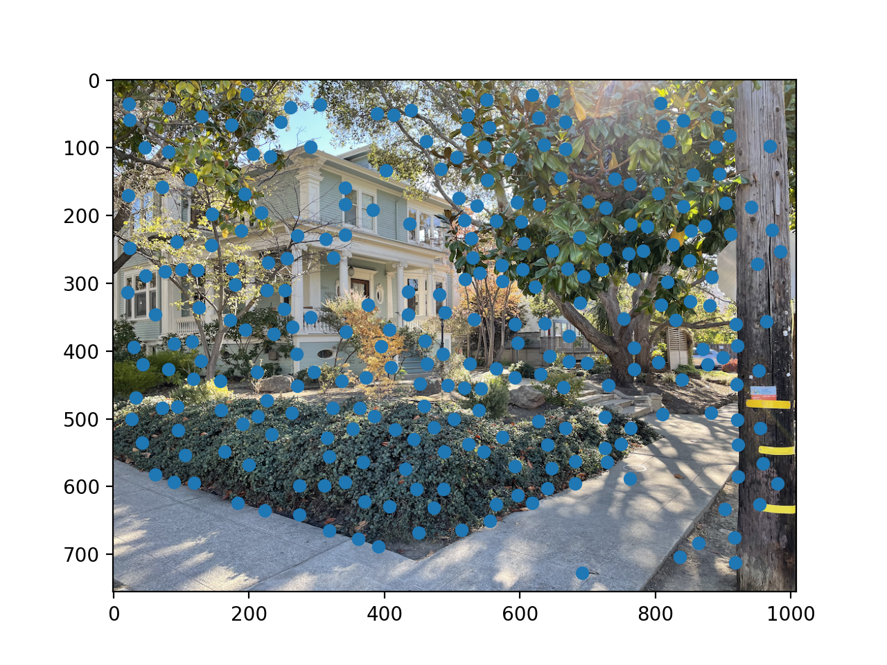

Part 1: Image Rectification
The results of rectifying two images are below
|
Source
|
Rectified
|
|
Source
|
Rectified
|
Part 2: Image Mosaicing
The results of three mosaics that I generated are below
 Left Image
Left Image
|
 Right Image
Right Image
|
 Panorama
Panorama
|
Part 3: Tell What You've Learned
For me the most interesting part of this project was learning how to set up a system of equations for
the homography matrix. It's something I initially did very wrong and it was interesting to see how different
errors resulted in different visual artifacts. Also, it was just a really satisfying and clean sliution in the
end in my opinion.
As well, I also really enjoyed the challenge of blurring well; I tried laplacian stacks, a linear blur, and
more complicated blur functions. I ended up going with the complicated blur functions as those gave the best
results visualized above. One such funciton was $$f(x) = \text{clamp}(0, 1, e^{-\frac{1}{20}(x - 50)})$$
To give a value between $[0, 1]$ which was taken to be the weight of the left image to use with $1 - f(x)$
being the weight of the right image.
Part B: Feature Matching for Autostitching
Part 1: Detecting Image Corners
Below is an example image with the Harris interest points labeled. To give a cleaner, more displayable look; I used the skimage.feature.corner_peaks
method with min_distance=20 to filter the interest points.

Harris Interest Points on Sample Image
Part 2: Adaptive Non-Maximal Supression
To implement ANMS, I construct a KD-Tree for querying nearest neighbors. Then for each point I do the flilowing
-
I query the 20 nearest neighbors to the point.
-
I filter these neighbors to keep only those for which $f_{HM}(x', y') * 0.9 > f_{HM}(x, y)$.
Here, $f_{HM}$ is the harris interest score computed as the $h$ matrix from the starter code.
-
If no neighbors remain, I query more neighbors and restart. If some neighbors do remain, I return
the distance between the closest remaining neighbor and the current point. This is the minimum
supression radius.
Finally, I return the $k$ points with largest maximum supression radius.
Below is an image before non-maximal supression and a second image with $100$ maximal points
displayed.
Feature Matching, Outlier Rejection, and Mosaicing
The final part of the project involves using the features I've detected to create panoramas.
The first step in doing so is to create feature descriptors for all the non-supressed interest
points. This is done by extracting an $8 \times 8$ image patch around each feature with a stride
of $5$; thereby giving a receptive field of $41 \times 41$ (for symmetry). These feature descriptors
are then normalized as $\frac{x - \mu_x}{\sigma_x}$ to have mean 0 and standard deviation 1.
The next step is to match features across images. To do so, I again construct a KD-Tree for querying
nearest neighbors in the feature space. For each point in the first image, I query the descriptor's
two nearest neighbors and consider the nearest neighbor a good feature match if
$\frac{||q - n_1||_2}{||q - n_2||_2} < \epsilon$. Here $q$ is the query feature descriptor from image 1
and $n_1, n_2$ are the nearest neighbor feature descriptors in image 2. Epsilon is usually taken to be $0.6$.
Finally, to compute the best possible homography, I use RANSAC which involves repeatedly
-
Picking 4 sets of matched feature points from the last step
-
Compute an exact homography of this critically determined system.
-
Evaluate how many of the matched features are inliers under this homography. An feature is an interest
point if $||Hp_{left} - p_{right}||_2 < \psi$ for some $\psi$ usually equal to $5.0$. That is, a feature
is an inlier if transforming it via the computed homography places it near its matched feature in the other
image. Across iterations I track the largest set of inliers.
Once the iterations have completed, I use the largest set of inliers to compute a least squares estimate of the
correct homography between the two images. Using this I can warp the images to each other exactly as in part 1.
Below are three panoramas generated by the automatic stitching method vs those with manually labeled points from
part A.
|
Left Image
|
Right Image
|
|
Manually Labeled Points
|
As well, with the hand labeled points I was unable to get results that didn't have
artifacts for three images, however, with the automatic stitching I was able to complete the example
above
 Full Panorama
Full Panorama
Below are a few other examples where you can see that automatic stitching removes some artifacts.
Notice how the corner of the concrete lines up much better with the automatic stitching.
Finally, I've added a panorama with new images
 Left Image
Left Image
|
 Middle Image
Middle Image
|
 Right Image
Right Image
|
 Panorama
Panorama
|